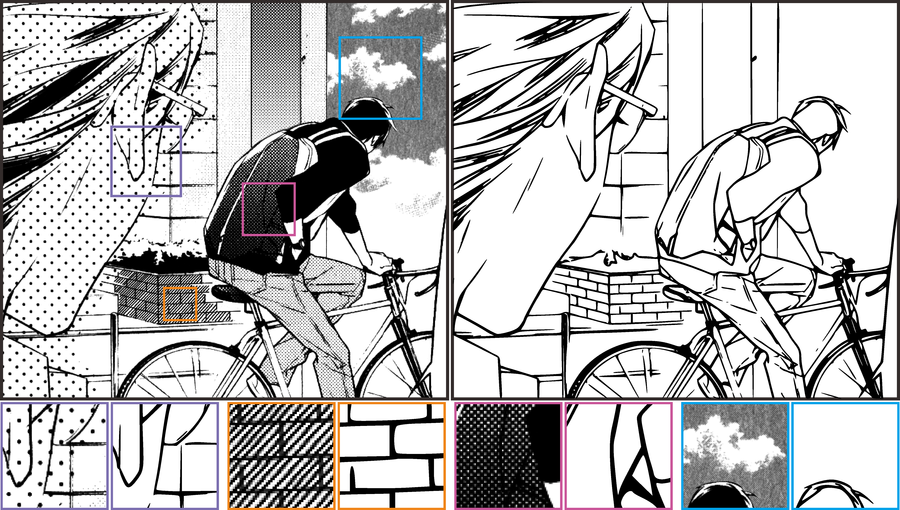
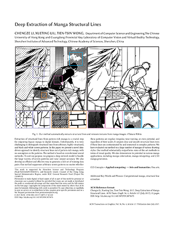

SIGGRAPH 2017
ACM Transactions on Graphics (SIGGRAPH 2017 issue), Vol. 36, No. 4, July 2017, pp. 117:1--117:12.
Extraction of structural lines from pattern-rich manga is a crucial step for migrating legacy manga to digital domain. Unfortunately, it is very challenging to distinguish structural lines from arbitrary, highly-structured, and black-and-white screen patterns. In this paper, we present a novel data-driven approach to identify structural lines out of pattern-rich manga, with no assumption on the patterns. The method is based on convolutional neural networks. To suit our purpose, we propose a deep network model to handle the large variety of screen patterns and raise output accuracy. We also develop an efficient and effective way to generate a rich set of training data pairs. Our method suppresses arbitrary screen patterns no matter whether these patterns are regular, irregular, tone-varying, or even pictorial, and regardless of their scales. It outputs clear and smooth structural lines even if these lines are contaminated by and immersed in complex patterns. We have evaluated our method on a large number of mangas of various drawing styles. Our method substantially outperforms state-of-the-art methods in terms of visual quality. We also demonstrate its potential in various manga applications, including manga colorization, manga retargeting, and 2.5D manga generation.
Paper(PDF, 9.3MB) 
Supplementary Material (PDF, 11.9M)
Inference Code (GitHub)
@article{li-2017-deep,
author = {Chengze Li and Xueting Liu and Tien-Tsin Wong},
title = {Deep Extraction of Manga Structural Lines},
journal = {ACM Transactions on Graphics (SIGGRAPH 2017 issue)},
month = {July},
year = {2017},
volume = {36},
number = {4},
pages = {117:1--117:12},
}